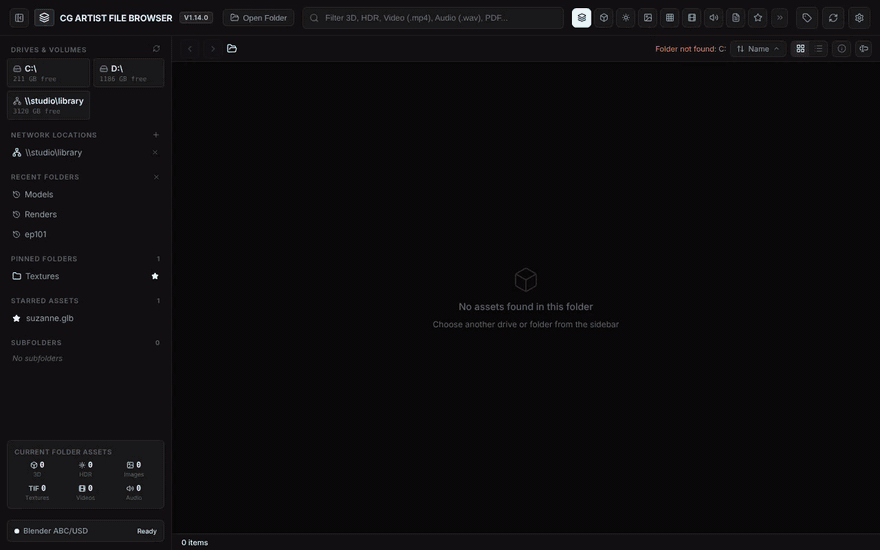
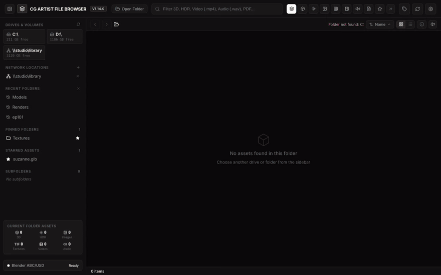

Deep dive
Quick Look
The floating preview window opened with Space: arrow keys, scrubbing video and audio, moving the window, and what it can show.
Opening and closing
Select a file in the folder view and press Space. A window opens over the grid and shows the file in the viewer it would normally get: an image, a 3D model, an HDR map, a video, an audio file, a PDF, a Markdown document, a render texture or an image sequence. Press Space or Esc to close it. Enter closes the window and opens the file in its full viewer, and double-clicking the picture does the same.
Files without a viewer, such as text or archives, are skipped. Quick Look only works in the folder view, not inside a viewer.

Moving through the folder
The arrow keys move the selection in the grid, and the window follows the selection. Nothing opens until you press Enter, so you can look through a folder without leaving it.

Moving the window
Drag the title bar to move the window. It stays on top of the folder and does not block the rest of the grid.
Scrubbing video and audio
Quick Look is also a quick way to check a clip. Drag along the scrubber under a video and the picture follows your pointer. The video keeps playing while you scrub, so you can find the right moment without opening the full player.

Audio files can be scrubbed by dragging as well.
Found a mistake or something missing? Edit this page on GitHub.